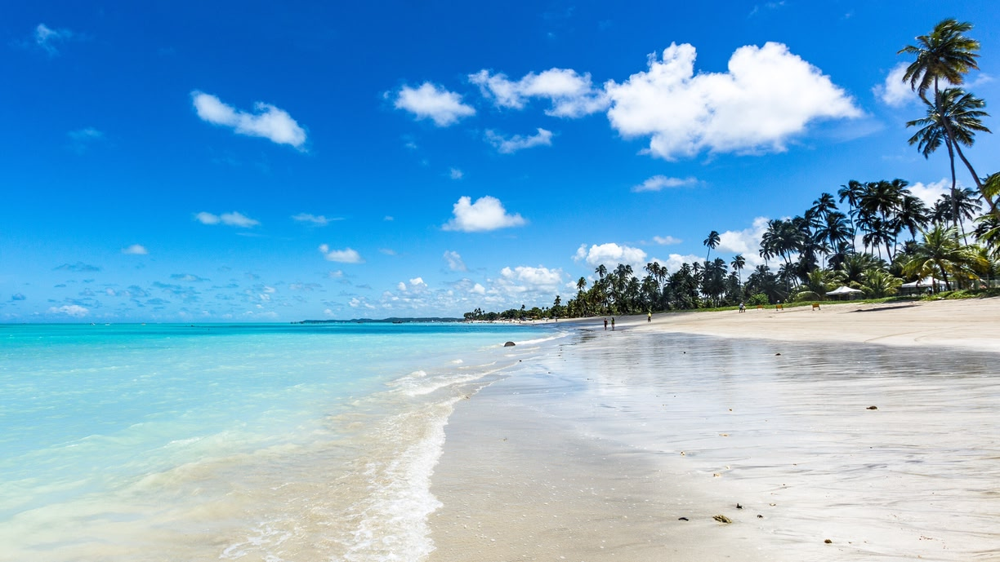

Descobrindo as Praias do Nordeste
O Nordeste do Brasil possui algumas das praias mais bonitas do mundo. Com aguas cristalinas, areia branca e um clima tropical durante quase todo o ano, e um destino perfeito para quem busca descanso e paisagens incriveis.
Durante minha viagem, visitei diversas praias paradisiacas e pude conhecer a cultura local, a culinaria tipica e a hospitalidade das pessoas da regiao. Cada praia possui sua propria beleza e charme especial.
